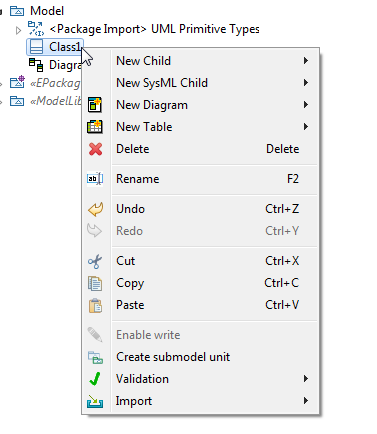
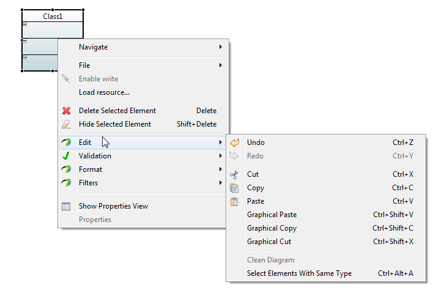
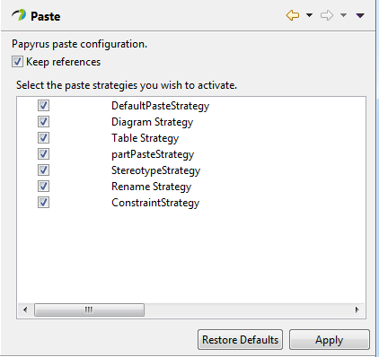
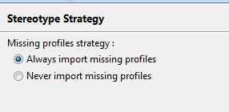
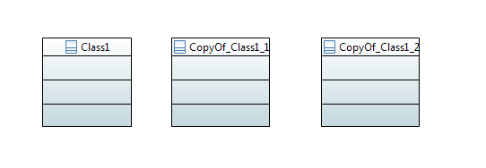
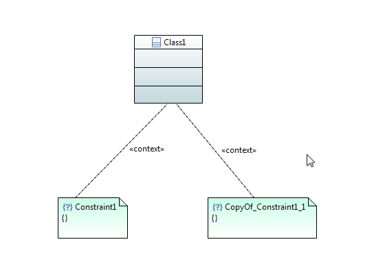

Papyrus's policy is to ensure consistency between models and diagrams, so by default the cut/copy/paste functionalities act both on diagram and model elements. The Copy/Cut/Paste functionalities are available between models and diagrams but not between eclipse instances. The Cut/Paste functionalities are disable on root and read only elements.
Right click on a model explorer element

M1 is the COMMAND key on MacOS X, and the CTRL key on most other platforms. M2 is the SHIFT key.
On a Diagram element Right Click>EDIT

Papyrus copy/paste/cut preferences is accessible on Window>Preferences>Papyrus>Paste The preference page lists all the available strategies and the checkbox to select whether the references should be kept.

The strategy paste all copied elements in the selected place. It is required for all other strategies.
The strategy reapply profiles and stereotypes on the newly copied elements.


The strategy allows copy/paste for diagrams in model explorer.
The strategy allows copy/paste for tables in model explorer.
The following strategies will only apply on uml models
This strategy works only on uml class diagrams. It draws the constraint "context" link after a paste.

The following strategies will only apply on sysml models
This strategy duplicates the linked association for each property pasted.